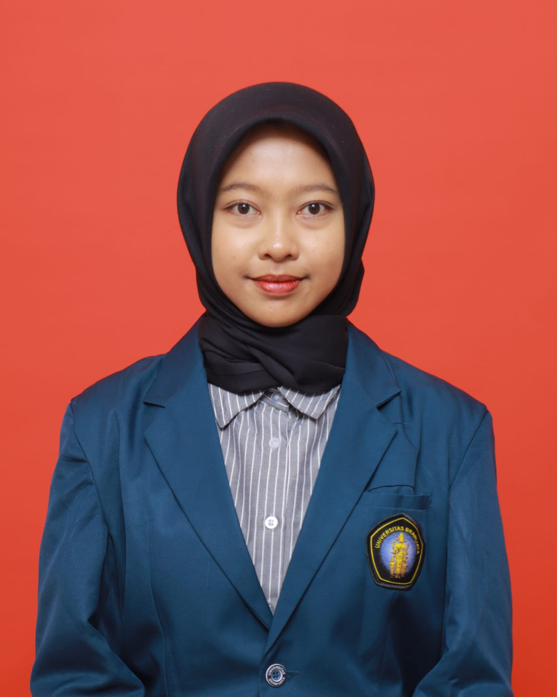

I'm an aspiring UI/UX designer developing my skills in user experience and user interface design. Although still in the early stages of my career, I'm highly curious, disciplined, and committed to continuous learning and improving my design skills. I'm ready to take on new challenges and contribute positively in a professional work environment.
Created promotional and social media designs for MBG using Canva and other design tools. Developed visual content aligned with brand identity and marketing goals.
Providing design services including social media posts, posters, and digital content. Focused on clean, engaging, and client-oriented visual communication.
Coordinated team activities for the P5 (Project Penguatan Profil Pelajar Pancasila) program. Managed task distribution, schedules, and ensured the project ran according to the curriculum guidelines.
📧 rretnoowulann@gmail.com
📞 0895428918398
B.Sc in Information Systems
Universitas Brawijaya
2025 – PRESENT